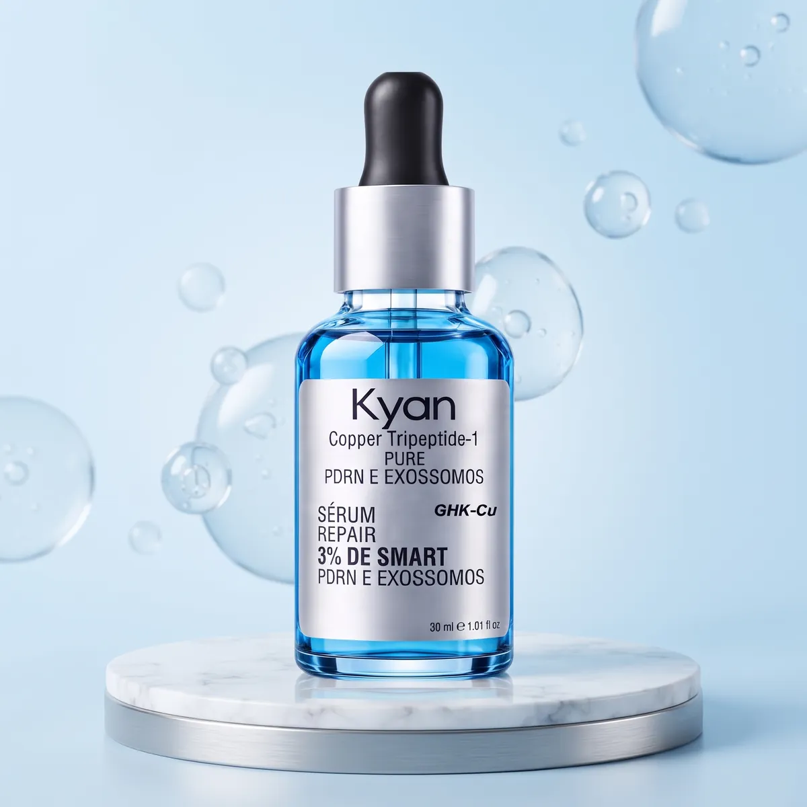
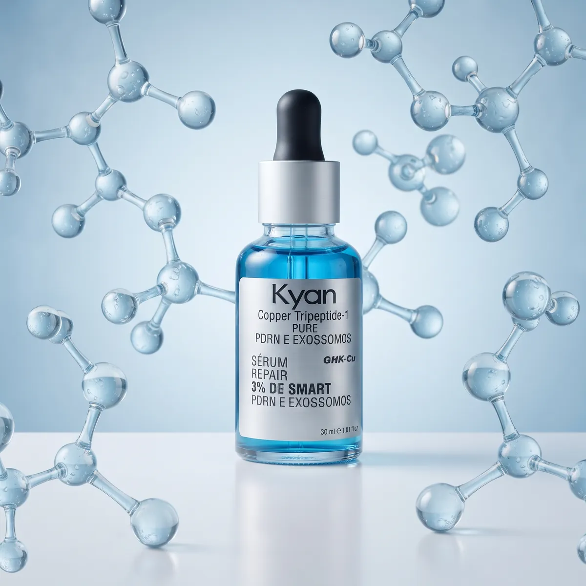
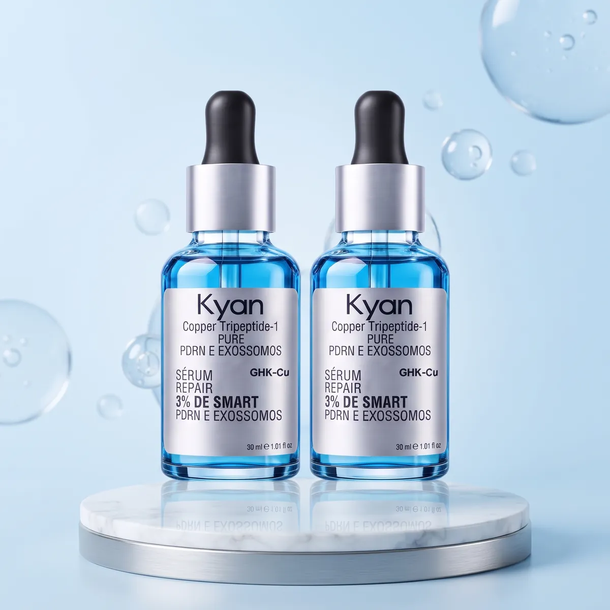
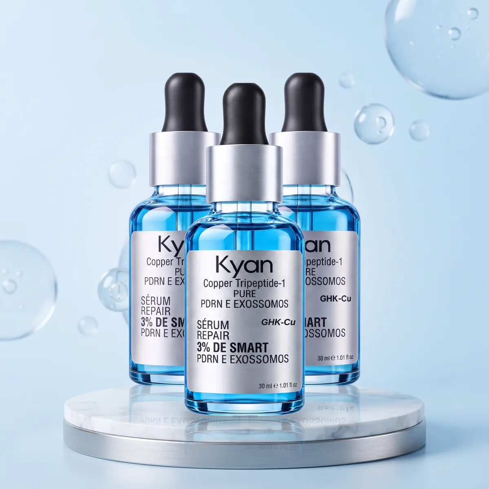

Kit Inicial
1 frasco · 30 ml no total
R$ 129,90
ou em até 12x no cartão
R$ 129,90 por frasco
- 1 frasco de 30 ml
- Conta-gotas dosador
- Ideal para conhecer o sérum
Sérum facial com Copper Tripeptide-1 (GHK-Cu), PDRN e exossomos. Algumas gotas por dia para hidratar e cuidar da aparência da sua pele.*


O Sérum Repair reúne três ativos de cuidado da pele em uma fórmula leve, para aplicar com o conta-gotas no rosto limpo.
O cobre tripeptídeo-1, conhecido como GHK-Cu, é um dos peptídeos mais usados em cosméticos para cuidar da aparência da pele. Na fórmula Kyan, ele vem acompanhado de um complexo com PDRN e exossomos. Com o uso contínuo, a pele fica com aspecto mais hidratado, viçoso e uniforme.*
Escolher meu kit Sérum RepairSeis motivos para incluir o sérum de cobre tripeptídeo-1 na sua rotina.
Com o uso contínuo, ajuda a suavizar a aparência das linhas finas.*
Pele com aparência mais firme e elástica ao longo das semanas.*
Ajuda a manter a pele hidratada e macia ao toque.*
Pele com aspecto mais luminoso e tom mais uniforme.*
Você aplica só as gotas necessárias, sem desperdício.
Cobre tripeptídeo-1, PDRN e exossomos na mesma fórmula.
* Resultados graduais, que dependem do uso contínuo e do tipo de pele. Variam de pessoa para pessoa.
Pronta para começar?
Algumas gotas com o conta-gotas, leves toques no rosto e pronto. O sérum entra na rotina de manhã ou à noite, antes do hidratante e do protetor solar.
Lave e seque a pele antes da aplicação.
Use o conta-gotas para distribuir o sérum no rosto e no pescoço.
Massageie suavemente até a pele absorver. Depois, siga com o hidratante.
Se usar pela manhã, finalize sempre com protetor solar.
Evite contato com os olhos. Não aplique sobre pele irritada ou lesionada. Faça um teste em pequena área antes do primeiro uso. Siga as orientações do rótulo.
Três ativos para o cuidado diário da pele do rosto.
Quanto mais frascos, menor o preço de cada um. O desconto é calculado sobre o preço de R$ 129,90 do frasco avulso.
1 frasco · 30 ml no total

-11%OFF2 frascos · 60 ml no total

-23%OFF3 frascos · 90 ml no total
Se em até 7 dias depois de receber você desistir da compra, devolvemos o valor pago, como garante o Código de Defesa do Consumidor. É só escrever para atendimento.phnegociosdigitais@gmail.com.
Ler a Política de Troca e ReembolsoÉ um sérum facial de uso tópico da Kyan Cosmetic Technology com cobre tripeptídeo-1 (Copper Tripeptide-1, conhecido como GHK-Cu), PDRN e exossomos. Vem em frasco de 30 ml com conta-gotas.
Com o rosto limpo e seco, aplique de 2 a 3 gotas e espalhe com leves toques até a pele absorver. Pode ser usado à noite e, se preferir, também pela manhã. De dia, finalize sempre com protetor solar. Siga as orientações do rótulo.
Prefira não aplicar no mesmo momento que ácidos fortes ou vitamina C pura. Uma opção é usar o Sérum Repair à noite e esses ativos em outro horário. Na dúvida, fale com seu dermatologista.
Os resultados são graduais e dependem do uso contínuo, do tipo de pele e da rotina de cuidados. Por isso recomendamos manter o uso por algumas semanas. Os resultados variam de pessoa para pessoa.
Foi pensado para o uso diário em diferentes tipos de pele. Se a sua pele é sensível, faça antes um teste em uma pequena área e aguarde 24 horas. Não aplique sobre pele irritada ou lesionada.
Gestantes, lactantes e pessoas com alguma condição dermatológica devem consultar um médico antes de usar qualquer cosmético novo.
O Kit Inicial serve para conhecer o sérum. Como o resultado vem do uso contínuo, os kits de 2 e 3 frascos mantêm a rotina por mais tempo e saem mais em conta: no Kit Completo cada frasco sai por R$ 99,97.
Frete fixo de R$ 19,90 para todo o Brasil, cobrado no checkout. Envio via PAC, com entrega em cerca de 10 dias úteis após a confirmação do pagamento. Você recebe o código de rastreio por e-mail.
Sim. Você tem 7 dias corridos a partir do recebimento para desistir da compra, conforme o artigo 49 do Código de Defesa do Consumidor. Veja os detalhes na Política de Troca e Reembolso.
O pagamento é processado pela RXPAY em ambiente seguro. Você pode pagar com Pix, boleto ou cartão de crédito em até 12x (os juros do parcelamento são calculados no checkout).
Produto cosmético de uso externo. Não é medicamento e não substitui tratamentos médicos ou dermatológicos. Evite contato com os olhos. Não aplique sobre pele irritada ou lesionada. Em caso de irritação, suspenda o uso. Mantenha fora do alcance de crianças. Resultados variam de pessoa para pessoa. Imagens ilustrativas.
Garanta o Sérum Repair Kyan com 2 frascos por R$ 229,90 (R$ 114,95 por frasco) e comece já a sua rotina.